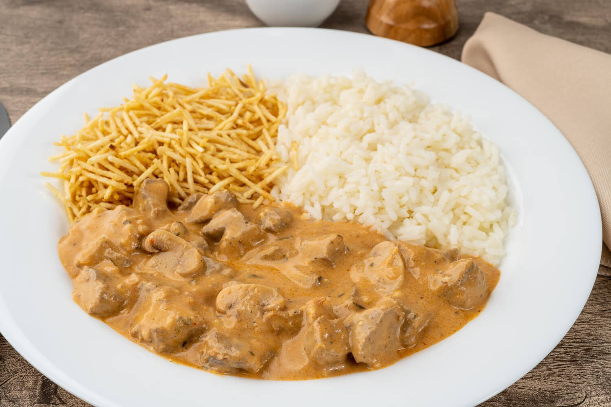
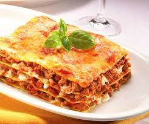
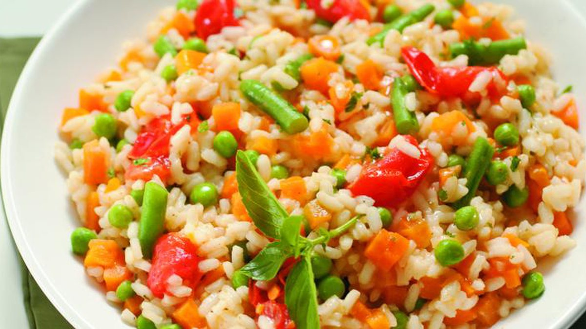

- 500g de carne
- 1 pitada de pimenta-do-reino
- 3 colheres (sopa) de manteiga
- meia cebola
- 1 tablete de MAGGI Caldo Carne
- 4 colheres (sopa) de água fervente
- meia xícara (chá) de conhaque
- 200 g de champignons em conserva fatiados
- 3 colheres (sopa) de purê de tomate
- 1 colher (sopa) de mostarda
- 2 colheres (sopa) de ketchup
- 1 lata Creme de Leite

- 500g de massa de lasanha
- 500g de carne moída
- 1cx creme de leite
- 500g de presunto
- 500g de mussarela
- 1 cebola
- 1cx molho de tomate

- 4 xícaras (chá) de água
- 2 tabletes de Caldo Legumes
- 3 colheres (sopa) de manteiga
- 1 xícara (chá) de arroz integral tipo agulinha
- 2 colheres (sopa) de semente de linhaça
- 1 pitada de açafrão
- 1 cenoura em cubos
- 1 xícara (chá) de brócolis aferventados
- 1 caixa de creme de leite
